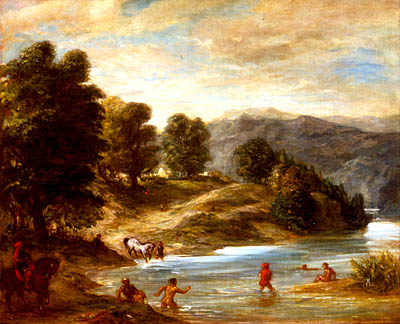

Precolonial collaborationnist with European colonial authorities
Samy Y.
In the 19th century, agriculture in Morocco underwent significant changes, marked by increased irrigation efforts, crop diversification, and the introduction of new farming practices. Despite facing challenges such as droughts, civil wars and limited transportation, it continued to evolve up until the advent of the French Protectorate in 1912...
In pre-colonial Morocco, the predominant economic structure was centered around a rural subsistence model. Local farms were commonly held collectively, known as bled el jemâa. Established customs regulated land usage and distribution among families. Despite economic setbacks occurring periodically, civil conflicts at both national and local levels and the primitive tools employed, there remained a significant emphasis on soil exploitation and agriculture constituted the primary occupation for the majority of rural inhabitants. Numerous lands became contested territories among various groups and tribes, which sometimes prompted the Makhzen to intervene in order to settle the disputes.
Pierre Tralle, a French prisoner who also participated in the construction of Meknes over a seven-year period until 1700, highlighted in his report on the Moroccan situation the fertility of the land which he considered to be adapted to producing high-quality crops.
Despite opening to trade in the late 19th century, Morocco faced limitations due to inadequate agricultural surplus and the antiquated transportation system, which hindered commercial activities. Foreign land ownership was largely unattainable before colonization, even though European powers secured legal exceptions allowing land speculation around major harbors through treaties such as the Treaty of Madrid in 1880 and the Treaty of Algeciras in 1906.
During the latter half of the 19th century, there was an increased interest on irrigation and agricultural activities, particularly under the reign of Mohammed IV, sparked when he was still the caliph of Marrakech. This interest lead to the creation of various water sources in the region, and the construction of a canal originating from Wadi N'Fiss [fr], as well as another canal named Fitout River which transported water from Tastaout to the plains encompassing Zemrane, Rahamna, and Sraghna. Throughout the 19th century, the Chaouia region rose as an important grain and livestock exporting hub through the port of Anfa, despite governmental policies restricting exports.
An important shift in the types crops cultivated was observed in many regions prior to the establishment of the protectorate. The cultivation of olive trees, once prevalent across the coastal plains along the Atlantic coastal regions and the Rif, significantly declined.
The Atlantic plains were renowned for the quality of their wheat, barley, and abundant vineyards, while vegetable cultivation was primarily concentrated near urban centers. Morocco also produced oranges, almonds, walnuts and figs. The introduction of new crops, such as aloe vera from the Americas, and potatoes from Europe, affected agriculture in Morocco. During the 19th century, the cultivation of plants like henna, flax, hashish, and turmeric gained prominence. Forested areas retained their original situation and composition, comprising oak and argan trees, and other species like willows, junipers, and pines.
Sources:
- Salem, Ariane (2021). The Negative Impacts of Colonization on the Local Population: Evidence from Morocco
- Harakat, Ibrahim (2016). المغرب عبر التاريخ ج3 (in Arabic). دار الرشاد الحديثة.